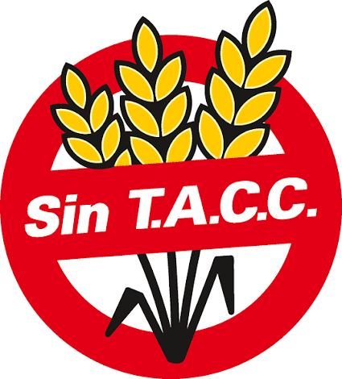

Débora, 48 años – Celíaca
“Llevaba tiempo sin entender por qué ciertos síntomas no mejoraban. Al buscar mi medicación para el mareo en Remedios Sin Gluten, descubrí que contenía gluten. Pude cambiarlo y hoy me siento mucho mejor.”

Búsqueda rápida, segura y libre de gluten.
Escribe el término y presiona Enter o el botón Consultar para ver si es libre de gluten.
Cada medicamento publicado en Remedios Sin Gluten pasa por un proceso de auditoría clínica realizado por médicos. Nuestro equipo revisa uno por uno los productos registrados en la base oficial de ANMAT para confirmar la presencia del isologo “Libre de Gluten / Sin TACC” y detectar cualquier cambio en las fórmulas.
Este método de verificación manual, combinado con datos oficiales y trazabilidad de laboratorios, nos permite ofrecer información confiable, actualizada y clínicamente relevante. Así, pacientes celíacos, profesionales de la salud y farmacéuticos pueden tomar decisiones seguras con evidencia verificable y sin ambigüedades.

La plataforma está diseñada bajo los estándares de accesibilidad digital WCAG 2.2, garantizando una experiencia clara, rápida y usable desde consultorios, farmacias o dispositivos móviles. La interfaz prioriza el contraste, la lectura fácil y la navegación por teclado para asegurar que la información esté disponible para todas las personas.
La información contenida en esta plataforma tiene un propósito exclusivamente informativo y de asistencia comunitaria. Remedios Sin Gluten es una herramienta diseñada para facilitar la búsqueda de datos sobre medicamentos y su aptitud para personas celíacas, pero bajo ninguna circunstancia reemplaza ni exime de la lectura atenta del prospecto oficial adjunto en el envase de cada producto.
Asimismo, los datos proporcionados aquí no sustituyen el criterio, diagnóstico ni la prescripción de un profesional de la salud. La decisión final sobre el consumo de cualquier fármaco debe ser validada por un médico tratante, quien evaluará cada caso según la historia clínica y las necesidades individuales.
Si tenés dudas sobre la composición de un medicamento, su seguridad o su aptitud para celíacos, consultá siempre con un profesional antes de administrarlo o consumirlo. La orientación médica es indispensable para garantizar un uso adecuado y seguro.
“Llevaba tiempo sin entender por qué ciertos síntomas no mejoraban. Al buscar mi medicación para el mareo en Remedios Sin Gluten, descubrí que contenía gluten. Pude cambiarlo y hoy me siento mucho mejor.”
“Siempre pensé que todos los productos de un laboratorio eran libres de gluten. Gracias a la plataforma descubrí que no siempre es así, y pude elegir una opción segura.”
“Una paciente me preguntó si el medicamento que estaba por administrarle era sin gluten. Con Remedios Sin Gluten pude confirmarlo en segundos y darle tranquilidad.”
Remedios Sin Gluten es una herramienta de consulta gratuita, creada para acompañar a la comunidad celíaca y brindar información confiable basada en auditorías médicas y datos oficiales.
Mantener la plataforma en línea, sostener los estándares de accesibilidad digital y actualizar la base de datos día a día requiere tiempo, esfuerzo y recursos técnicos. Todo el trabajo de verificación —incluyendo la revisión manual de los medicamentos registrados en ANMAT para confirmar el isologo “Libre de Gluten / Sin TACC”— es realizado por profesionales comprometidos con la seguridad del paciente.
Si la plataforma te resultó útil y querés apoyar su continuidad, podés colaborar invitándonos un Cafecito. Cada aporte ayuda a que este proyecto independiente siga creciendo y mantenga su calidad.